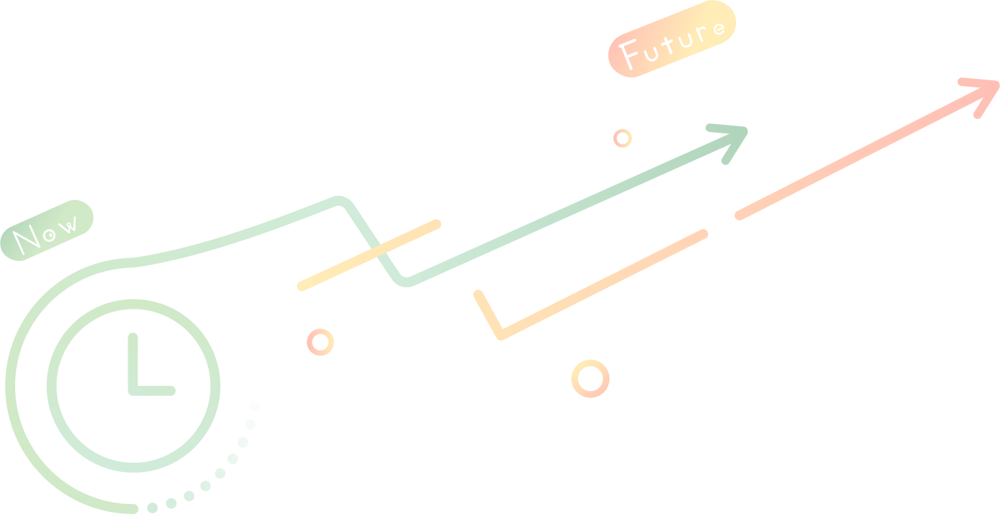

我們整合近期台灣發生的食安資訊
提供食安的一線情報，致力於建構一個網頁平台供大家快速查詢與使用
研究動機
近年來食安問題層出不窮，2019年初的非洲豬瘟延燒至今海關仍嚴守防線，而2021年初台灣開放含有萊克多巴胺的豬肉進口，此進口事件正中消費者憂心食品添加物的下懷，消費者渴望能獲得更加透明公開的管道。 除食安的意識提高外，隨生活以及工作模式的改變，日常飲食習慣也轉為外食。想食用有機和友善食材的心意及減少耗材等環保概念，這並非民眾不願意採購有機或是友善的食材，也並非不願意用行為支持環境，而是消費渠道並未銜接，而這銜接的關鍵就是綠色餐廳(出自綠媒體，民108)。然而政府在綠色餐廳方面缺乏政策宣傳，每年花費大量經費與人力的結果因消費者不了解或不熟識而付之東流。 為此我們想透過建立網頁平台的方式，不僅能讓查閱台灣豬商家變得簡易，同時也提高綠色餐廳的知名度。本系統不會侷限於特定議題，未來可隨時延展，當有新的食安問題發生時會在第一時間作反應，並供全台民眾使用。
研究目標
結合多種議題一手掌握資訊
將食安問題與永續概念結合，並提供多元化服務，讓大眾能夠用一個網頁就能得知所有已整合的資訊。

對未來議題具延展性
食安問題層出不窮，若未來爆發新的食安問題，將即時更新地圖標籤，在第一時間提供給使用者食品安全地圖。
普及綠色餐廳知識
透過本網頁設置的綠色餐廳專欄，可察看圖形化的綠色餐廳知識。讓原本缺乏宣傳的知識能夠被大眾所知與促進環保。
團隊
學生
彭鈺芳
郭上瑜
彭昱茹
黃靖婷
指導教授
蔡家安 助理教授
國立雲林科技大學資訊管理系暨研究所